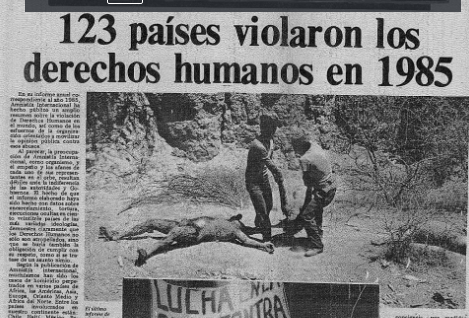
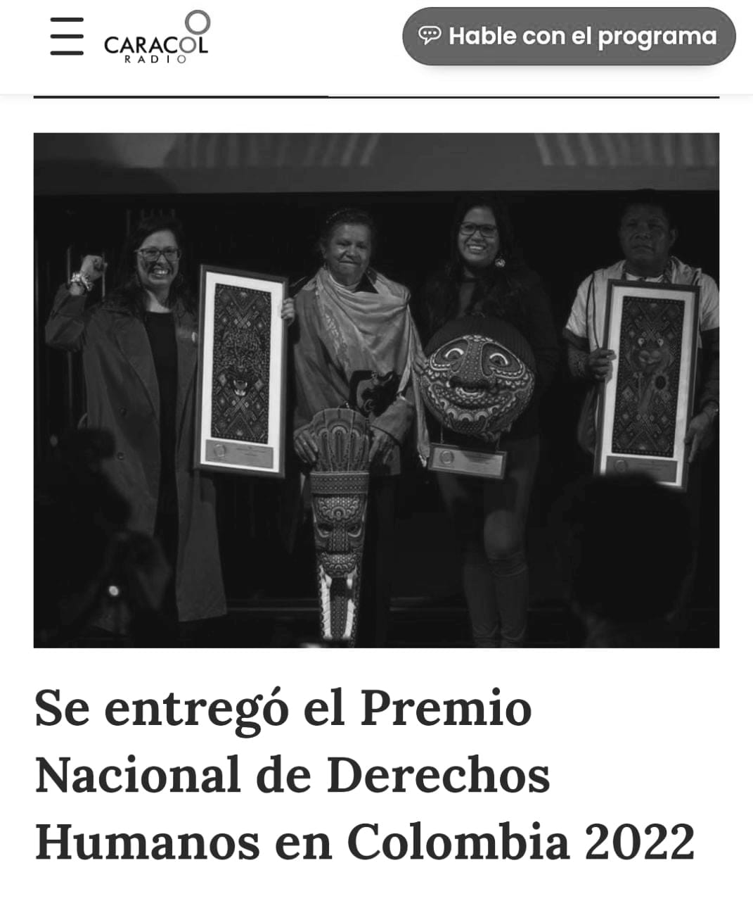
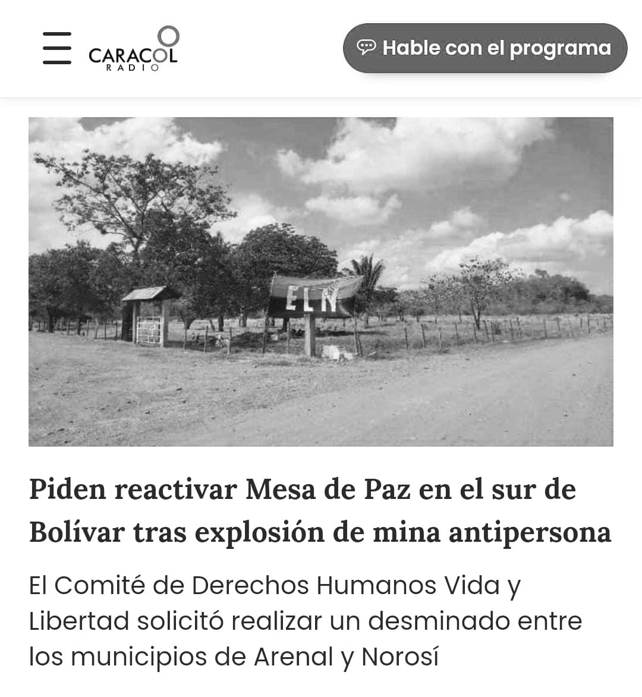
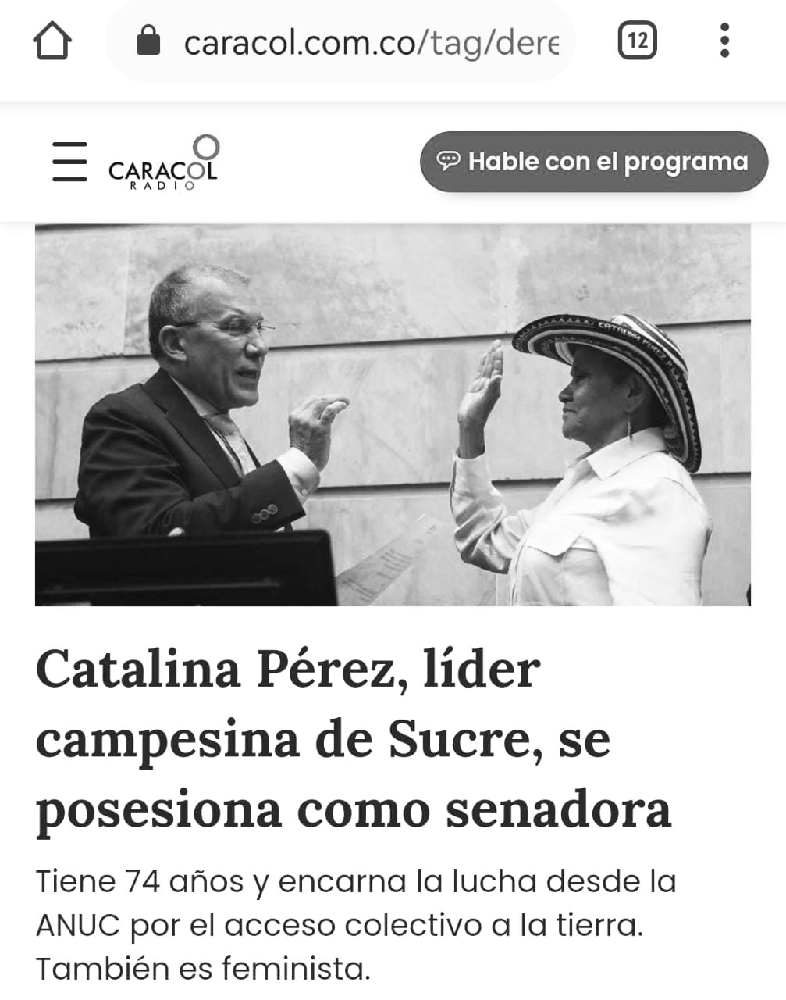
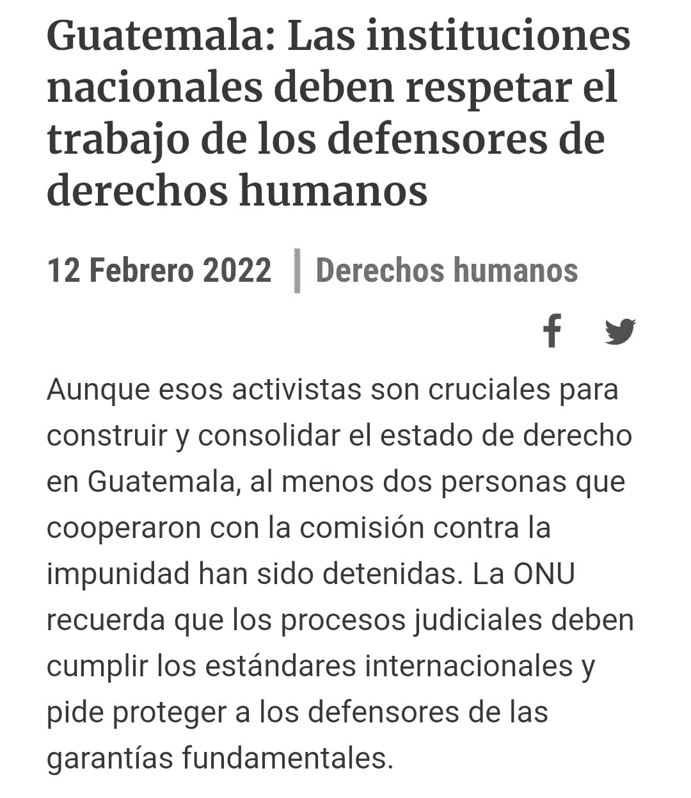
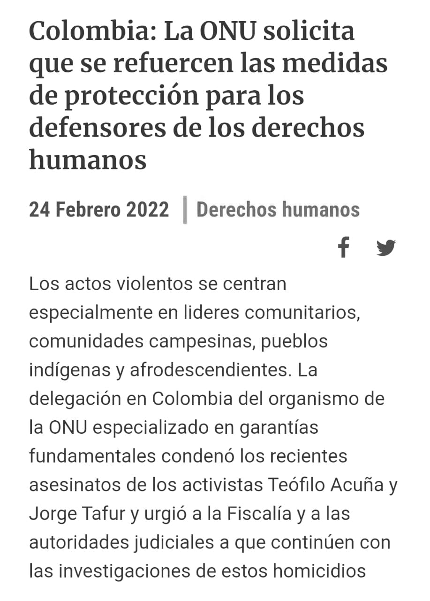
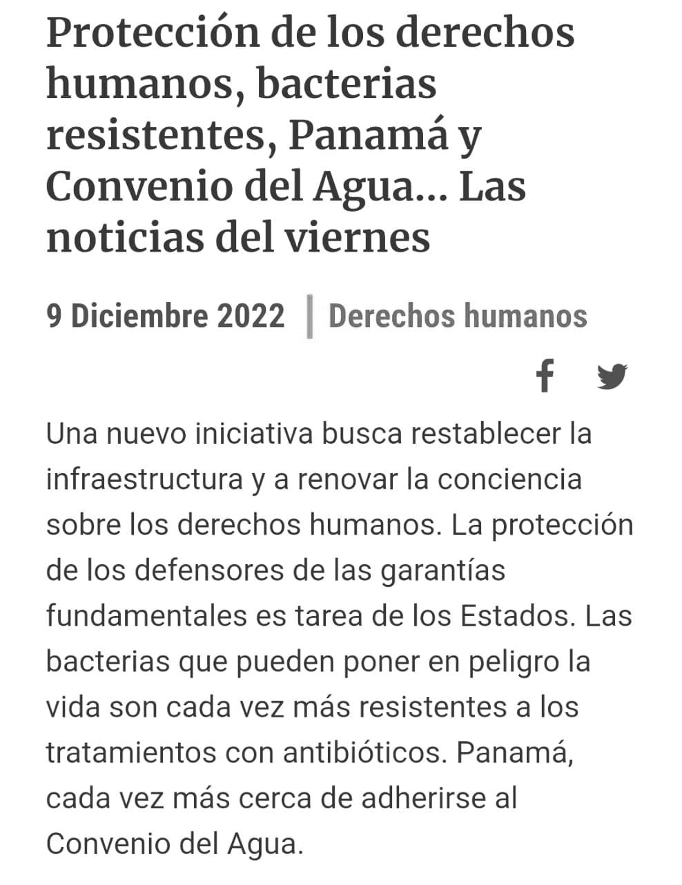

LA DEMOCRACIA MODERNA
La democracia moderna se funda en un sistema de creencias sobre la soberanía, organización política y en reglas de juego aceptadas por la comunidad entre la que es principal la renuncia al uso de la fuerza para acceder al poder o doblegarlo. No existe democracia firme y consolidada sino cuando las creencias que la hacen posible han arraigado extensa y profundamente en la sociedad; Sin embargo, la democracia moderna tiene 3 características principales que son: la constitución, la división de poderes y la independencia del poder político/judicial.

Las primeras nociones de democracia se remontan a la Antigua Grecia. No obstante, la democracia actual tiene muy poco que ver con aquella forma de gobierno patriarcal y clasista de hace unos 2500 años.
En la actualidad, el sufragio universal concede el derecho fundamental de participación política a todo ciudadano y ciudadana independientemente de su clase social, etnia o género. De este modo, de las polis griegas hemos pasado a los estados-nación, y los avances han sido enormes, no vamos a decir lo contrario.
Los derechos fundamentales que se han negado a tantos colectivos como mujeres, inmigrantes u otras minorías durante tanto tiempo (hasta hace relativamente pocos años) se han ido asentando y consolidando a base de sudor, sangre y reivindicaciones. Sin duda, estamos hablando únicamente de parte de occidente, ya que en otros lugares del globo los sistemas democráticos aún tienen que avanzar hasta esta dirección, presentando un gran número de países gobernados por dictaduras o democracias que realmente no garantizan los derechos más básicos de sus ciudadanos.
http://www.xn--sociologainquieta-kvb.com/2020/07/la-democracia-actual-la-necesidad-de.html
DESENCANTO CON LA DEMOCRACIA MODERNA
Es entendible que en nuestro país haya una creciente desilusión con la democracia, que se nos había vendido como el ungüento que curaba todos los males, siendo que no pasa de ser un método para elegir en forma regular y ordenada a la autoridad. Como dijo Winston Churchill es “el peor sistema, salvo por todos los demás”.
La desilusión con la democracia y el hambre por el autoritarismo se han extendido como reguero de pólvora por todos los ámbitos del planeta, como se puede apreciar en las campañas presidenciales en EE.UU., cuna de la democracia moderna y modelo a seguir por el resto del mundo por su innegable éxito económico y político.
Los jóvenes rechazan de manera alarmante involucrase en política, proporción que ha pasado de menos del 20% entre los nacidos en los años treinta del siglo pasado, a más del 60% entre quienes nacieron después de 1980, que han decidido marginarse por completo de los procesos políticos.
DERECHOS HUMANOS
Son los derechos inherentes al ser humano, sin distinción de raza, sexo, nacionalidad, étnia, lengua, religión u otra condición, se incluyen el derecho a la vida y a la libertad; a no estar sometido ni a esclavitud ni a torturas; a la libertad de opinión y de expresión; a la educación y al trabajo, entre otros.
https://www.unicef.org/es/convencion-derechos-nino/que-son-derechos-humanos
En mi informe anual correspondiente al año 1985, Amnistía Internacional ha hecho público un amplio resumen sobre la violación de Derechos Humanos en el mundo, así como de los esfuerzos de la organización orientados a movilizar la opinión pública contra esos abusos
Al parecer, la preocupación de Amnistía Internacional, como organismo, y el empeño y los afanes de cada uno de sus represen tantes en el orbe, resultan débiles ante la indiferencia de las autoridades y Gobiernos, El hecho de que el informe elaborado haya sido hecho con datos sobre encarcelamiento, tortura, ejecuciones ocultas en 123 países de las más variados ideologías, demuestra claramente que los Derechos Humanos no solo son atropellados, sino que se burla también la obligación de cumplir con su respeto, como si se tratara de un asunto nimio.
https://lum.cultura.pe/cdi/periodico/123-paises-violaron-los-derechos-humanos-en-1985
Menos del 10% de los casos de la comisión de la verdad se han judicializado
Hace 6 años, la comisión de la verdad creada por el ejecutivo, entrego a la fiscalía 138 casos de graves violaciones a los derechos humanos, de los cuales a la fecha solo se han judicializado 11 y los restantes siguen en indagación previa.
El día de los derechos humanos se celebra todos los años el 10 de diciembre, en conmemoración a la fecha en que, en 1948, la asamblea general de las naciones unidas aprobó la declaración universal de los derechos humanos.
DERECHOS HUMANOS EN COLOMBIA
Existen tres categorías de los Derechos Fundamentales:
Derechos de Primera Generación o Derechos civiles y políticos.
Derechos de Segunda Generación o Derechos Económicos, sociales y Culturales.
Derechos de Tercera Generación o Derecho de los pueblos.
La Constitución de 1991 incorporó, los derechos humanos
  DEFENSA DE LOS DERECHOS HUMANOS
En la Constitución de 1991 se crearon un conjunto de instituciones y formas jurídicas para proteger los derechos humanos:
Las personerías municipales: la función de recibir e investigar inicialmente las denuncias sobre violaciones de derechos humanos.
La Defensoría del Pueblo: su función es velar por la promoción, el ejercicio y la divulgación de los derechos humanos. Esta no investiga, pero se encarga de recopilar denuncias que pasan a la Procuraduría.
La Procuraduría: como la función es vigilar la conducta de los empleados oficiales y el estricto cumplimiento de la ley desempeña un papel importante cuando hay abusos de poder.
  